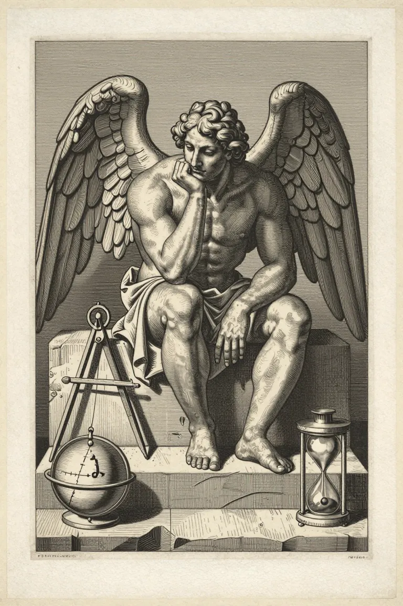

Et bilde skåret inn i en kobberplate med en gravstikke, fargelagt i furene og trykket under stort press. Schongauer og Dürer gjorde det til en kunst; Goltzius gjorde den svellende linjen til en demonstrasjon av ferdighet; i tre århundrer gjengav det malerier og kart.

Kjerneidé
En gravstikkelinje som svulmer og tilspisser seg i polert kobber gir den fineste og jevneste tonen en hånd kan lage.
Designprinsipper
Bygg hver tone av linjer som svulmer i midten og tilspisser seg i begge ender.
Legg linjene i systemer: parallelle linjer til en halvtone, et andre sett krysset på 30 til 45° til skyggen, og prikker i mellomrommene (prikk og rombe) til det dypeste mørket.
Drei hver linje rundt formen, som linjene på et høydekart, slik at svellingen viser lyset.
Hold linjeavstanden på 80 til 150 per tomme; øyet ser på lesehold et grått og ikke linjer.
La et tydelig plateavtrykk stå 10 til 20 mm utenfor bildet, med tittelen og navnene på tegneren og gravøren i margen.
Trykk i én sort eller mørkebrun farge på fuktet papir.